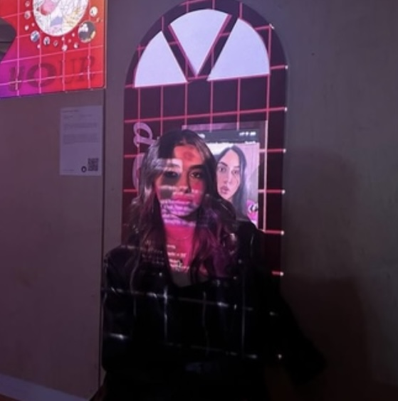

Liyan Ibrahim is a New York–based multimedia artist, creative technologist, and engineer whose work explores memory, displacement, digital identity, and the emotional weight of political histories through interactive and computational media. Drawing from personal and collective narratives, her practice moves between web-based experiences, installation, moving image, and experimental storytelling systems.
Her work often examines themes of exile, belonging, archives, and mediated memory, while engaging critically with emerging technologies and the ways they shape culture, identity, and human connection. Through both artistic and technical practices, she is interested in how AI and digital systems can be used as tools for storytelling, worldbuilding, and cultural preservation.
Her work has been exhibited across New York City and Abu Dhabi (2021, 2022, 2023, 2024, 2025, 2026), as well as at the Mozilla Festival. In 2024, she joined the Berkman Klein Center for Internet & Society to help develop educational initiatives centered on AI, ethics, and technology.
Alongside her artistic practice, Liyan currently works as a Forward Deployed Engineer at Wonder Studios, where she collaborates across creative and engineering teams to design AI-native workflows, storytelling systems, and creative production tools for emerging forms of media. She holds a master's degree from the NYU Interactive Telecommunications Program.